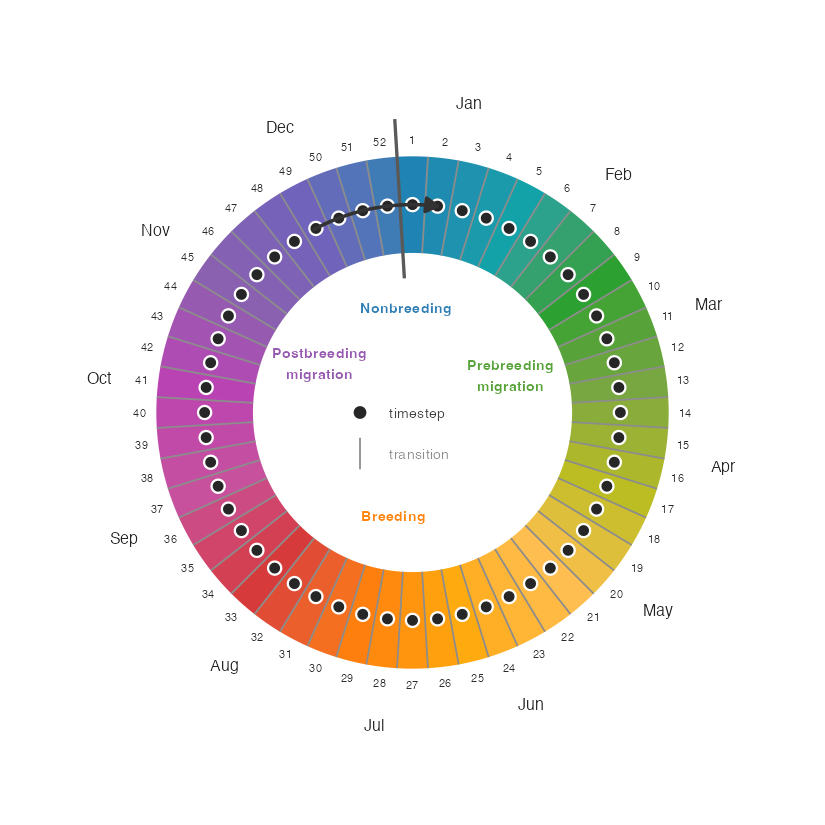
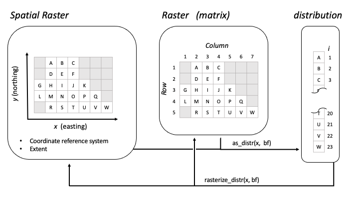
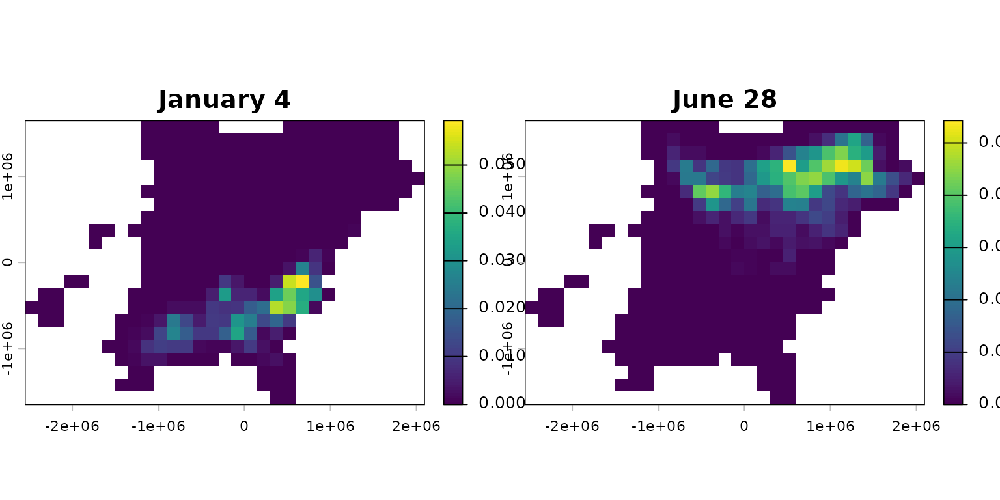
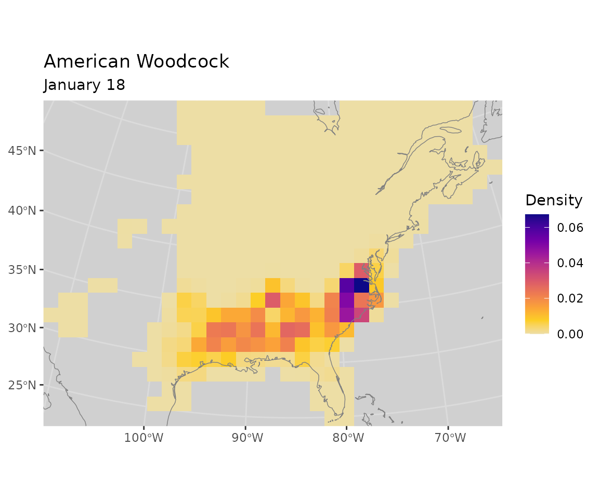
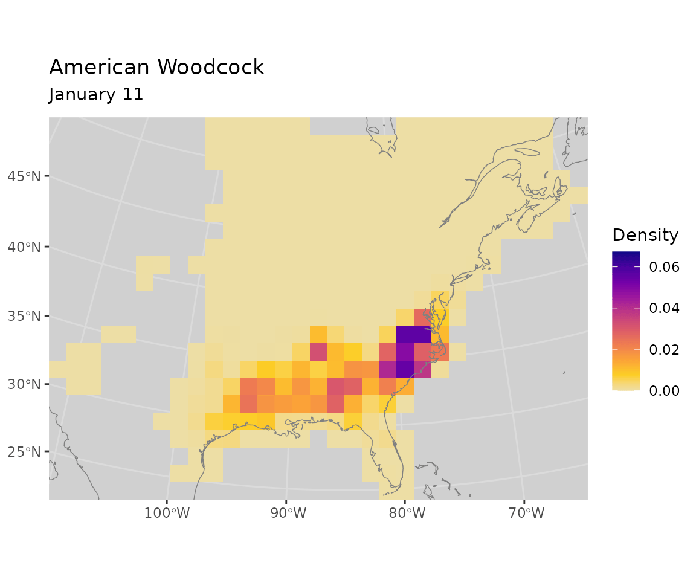
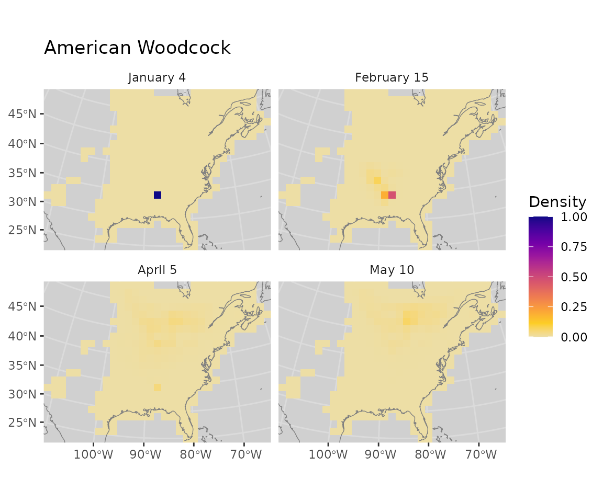
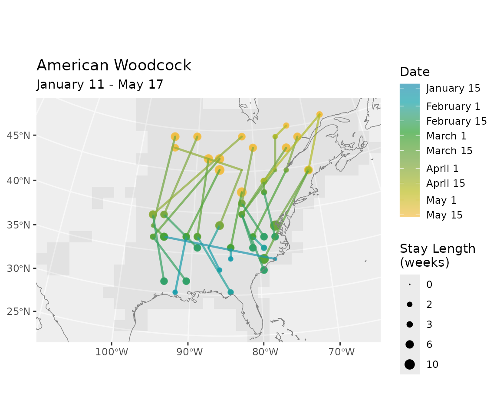
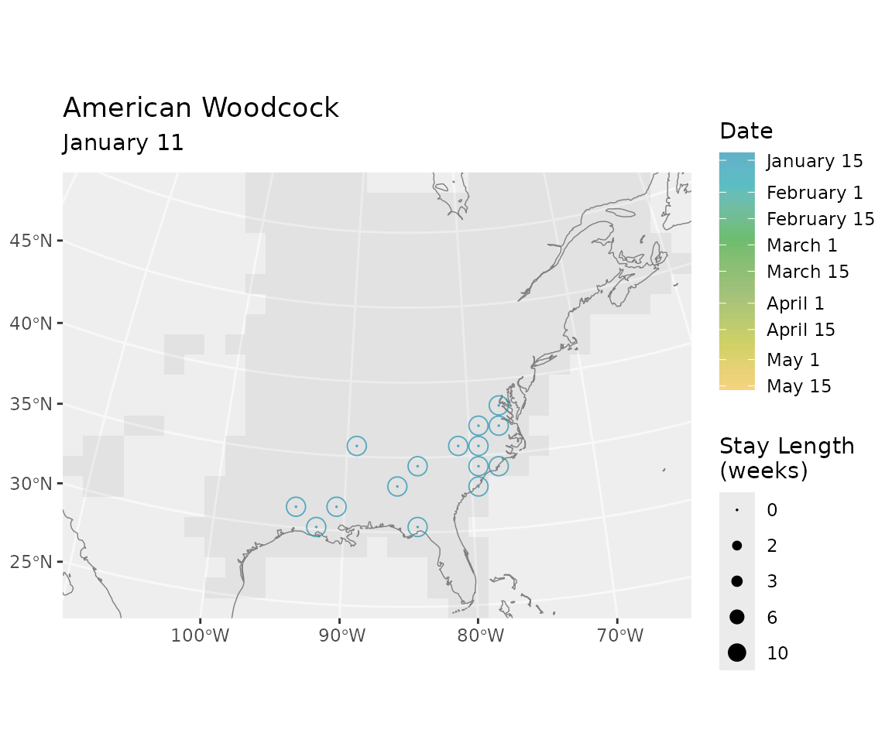

Setup
Install packages
installed <- rownames(installed.packages())
if (!"remotes" %in% installed)
install.packages("remotes")
if (!"rnaturalearthdata" %in% installed)
install.packages("rnaturalearthdata")
remotes::install_github("birdflow-science/BirdFlowModels")
remotes::install_github("birdflow-science/BirdFlowR", build_vignettes = TRUE)Load model
The BirdFlow Science team has shared a collection of fitted models for use with the BirdFlowR package; as of mid-2026 the collection includes 60 vetted species. The website includes reports on each species that include a visualization of the distribution it was trained on and BirdFlow Migration Traffic Rate (BMTR) derived from the model.
A separate Avian Influenza collection is also available, providing models used for HPAI spread risk analysis.
We can also access the collection index through the package.
# Load and print index
index <- load_collection_index()
#> Downloading collection index
head(index[, c("model", "species_code", "common_name")])
#> model species_code common_name
#> 1 acafly_best_mo acafly Acadian Flycatcher
#> 2 amewoo_best_dg amewoo American Woodcock
#> 3 babwar_best_mo babwar Bay-breasted Warbler
#> 4 balori_best_mo balori Baltimore Oriole
#> 5 bkbwar_best_ll bkbwar Blackburnian Warbler
#> 6 brebla_best_dg brebla Brewer's BlackbirdAnd we can load a model from the collection based on the
model or species columns from the index.
Note: in the vignette this block isn’t executed.
# Load a specific model
bf <- load_model("amewoo") # caches locally and loads from cacheThis loads the smaller example model instead for efficiency of package building and testing, but do not use this one for science!
bf <- BirdFlowModels::amewoo # example and test datasetQuick demo
Two of the core functions of BirdFlowR are route() to
generate synthetic migration routes and predict() to
project birds forward or backward through time.
Routes
route() generates stochastic migration routes by
stepping birds through the model transitions. Calling it with a
season argument uses species-specific dates from eBird to
set the time span.

Forecast
predict() propagates a starting distribution forward
through time. Here we sample a single winter location and project it
forward to the breeding season.
set.seed(0)
location <- sample_distr(get_distr(bf, 1))
f <- predict(bf, distr = location, start = 1, end = 26, direction = "forward")
plot_distr(f[, c(1, 7, 14, 19)], bf, dynamic_scale = TRUE)
Time
BirdFlow models represent time as a loop of 52 timesteps (eBird weeks) with an explicit link from timestep 52 to timestep 1.

BirdFlow’s 52-timestep circular year. Dots mark timesteps / weeks; lines
between them mark transitions. Colors match the seasonal gradient used
by plot_routes(). The bold line at the Dec/Jan boundary
marks the year wrap-around. Season ranges shown are for American
Woodcock.
Points in time
Most functions that operate over time — get_distr(),
predict(), route() — accept time in any of
three forms:
- An integer timestep (e.g.
1,26) - A character date in
"YYYY-MM-DD"format (e.g."2022-06-21") - A
Dateobject
lookup_timestep() converts a date to a timestep integer,
and lookup_date() does the reverse.
# Convert a date to a timestep
lookup_timestep("2022-06-20", bf)
#> [1] 25
# Convert a timestep back to a date
lookup_date(25, bf)
#> [1] "2021-06-21"Sequences through time
predict(), route(), and other functions
that involve an arc through time have a common set of time arguments
that are handled by the lookup_timestep_sequence()
helper.
There are a variety of ways to specify time for these functions:
-
startandendto specify endpoints in any of the ways outlined above: timestep integers, character dates e.g."2026-01-07"or formal date objects. -
startandn_steps -
seasonandseason_buffer— uses season start and end dates from eBird and returned byspecies_info()
With dates (formal or character) the direction in time is explicit,
it will be backwards if the end date is earlier than the start. With all
other inputs it is not explicit and defaults to forward in time. Use
direction = "backward" to create a sequence backwards in
time with non-date input.
Here we demonstrate the time input options with
lookup_timestep_sequence(). All of these can also be used
with predict() and route().
# By timestep integers
lookup_timestep_sequence(bf, start = 1, end = 10)
#> [1] 1 2 3 4 5 6 7 8 9 10
# By character dates or formal date objects (direction is inferred from order)
lookup_timestep_sequence(bf, start = "2022-01-07", end = "2022-03-11")
#> [1] 1 2 3 4 5 6 7 8 9 10
# By season name (uses species-specific dates from species_info())
# and by default adds a one week buffer around the season.
lookup_timestep_sequence(bf, season = "prebreeding")
#> [1] 2 3 4 5 6 7 8 9 10 11 12 13 14 15 16 17 18 19 20
# without the buffer
lookup_timestep_sequence(bf, season = "prebreeding", season_buffer = 0)
#> [1] 3 4 5 6 7 8 9 10 11 12 13 14 15 16 17 18 19
# By start + number of steps
lookup_timestep_sequence(bf, start = 1, n_steps = 9)
#> [1] 1 2 3 4 5 6 7 8 9 10
# All but the date inputs can also be switched to a backward sequence
lookup_timestep_sequence(bf, season = "prebreeding", direction = "backward")
#> [1] 20 19 18 17 16 15 14 13 12 11 10 9 8 7 6 5 4 3 2
# Sequence wraps from week 52 to week 1
lookup_timestep_sequence(bf, start = 50, end = 3)
#> [1] 50 51 52 1 2 3
lookup_timestep_sequence(bf, start = 1, end = 45, direction = "backward")
#> [1] 1 52 51 50 49 48 47 46 45Space
Distributions
Distributions are the standard format for raster data used by BirdFlow.
Each BirdFlow model has a static mask that defines which cells are active — those with non-zero probability in at least one week of the eBird Status and Trends data the model was trained on. Distributions are a vector of values corresponding to the active cells in row major order.

BirdFlow distribution data structure: the raster mask selects active cells, which are stored as a flat vector (one distribution) or matrix (multiple distributions). Cells in gray are outside of the mask and not used by BirdFlow models.
Qualities of distributions:
- A single distribution is a numeric vector of length
n_active(bf), one value per active cell. - Multiple distributions are stored as a matrix with
n_active(bf)rows and one column per timestep. - Usually values sum to 1, and each gives the proportion of the population in the corresponding cell.
- They are model-specific: each BirdFlow model has its own extent and mask, so a distribution from one model cannot be used with another.
- The distribution cannot represent, and the model cannot work with, data outside of the static mask.
Spatial index conversions
The index i numbers active cells from 1 to
n_active(bf), skipping masked-out cells (visible in the
figure above as the gray shaded cells). i_to_xy() and
xy_to_i() convert between i and projected x/y
coordinates in the model’s CRS. latlon_to_xy() and
xy_to_latlon() convert between WGS84 latitude/longitude and
the model CRS, useful for bringing in locations from outside data.
# Coordinates of the first active cell
i_to_xy(1, bf)
#> x y
#> 1 -1125000 1575000
# Round-trip: i → xy → i
xy <- i_to_xy(100, bf)
xy_to_i(xy$x, xy$y, bf) # should return 100
#> [1] 100
# Convert a WGS84 lat/lon to model CRS (Amherst, MA approx.)
latlon_to_xy(lat = 42.4, lon = -72.5, bf)
#> x y
#> 1 1032587 432547.1
# Or to i index on the distribution
latlon_to_xy(lat = 42.4, lon = -72.5, bf) |> xy_to_i(bf = bf)
#> [1] 171Not shown above are conversions to row and column indices. See help
for i_to_rc() or any of the above functions for a complete
list of spatial conversions.
Retrieve distributions
We can retrieve the eBird distributions the model was trained on with
get_distr(). Use timestep, character dates, date objects,
or "all" to specify which distributions to retrieve.
Retrieve the first distribution and compare its length to the number of active cells.
d <- get_distr(bf, 1) # get first timestep distribution
length(d) # 1 distribution so d is a vector
#> [1] 342
n_active(bf) # its length is the number of active cells in the model
#> [1] 342Get 5 distributions. The result is a matrix in which each column is a distribution with a row for each active cell.
d <- get_distr(bf, 26:30)
dim(d)
#> [1] 342 5
head(d, 3)
#> time
#> i June 28 July 6 July 13 July 20 July 27
#> [1,] 0 0.000000e+00 0.000000e+00 0 0.000000e+00
#> [2,] 0 9.342922e-06 8.769396e-05 0 1.607396e-06
#> [3,] 0 1.499294e-05 4.842432e-05 0 1.748452e-06We can also specify distributions with dates, or use
"all" to retrieve all the distributions.
d <- get_distr(bf, c("2022-12-15", "2022-06-15")) # from character date
d <- get_distr(bf, "all") # all distributions (this is the default)
d <- get_distr(bf, Sys.Date()) # Using a Date objectUse rasterize_distr() to convert a distribution to a
SpatRaster defined in the terra package. The second argument, the
BirdFlow model, is needed for the spatial information it contains.
as_distr() converts from SpatRaster to a distribution.
d <- get_distr(bf, c(1, 26)) # winter and summer
r <- rasterize_distr(d, bf) # convert to SpatRaster (terra package)
d2 <- as_distr(r, bf) # Convert a SpatRaster back to a distribution by default this renormalizes so each distribution sums to 1Alternatively, convert directly from BirdFlow to SpatRaster with
rast(). The second (optional) argument which
accepts the same inputs as which in
get_distr().

Plot distributions
plot_distr() will make pretty ggplot2
plots that handle conversion to raster, overlaying the coastline, and by
default shows the static mask.
get_distr(bf, species_info(bf, "prebreeding_migration_start")) |>
plot_distr(bf=bf)
You can also animate over distributions.
get_distr(bf, lookup_timestep_sequence(bf, season = "prebreeding")) |>
animate_distr(bf=bf)
#> `nframes` and `fps` adjusted to match transition
Forecasting
predict() is used to project any distribution into the
future or past. It shows where birds in a particular time and location,
or set of locations will be in the future; or were likely to have been
previously.
In this example, we will sample a single starting location from the winter distribution and project it forward to generate a distribution of predicted breeding grounds for birds that wintered at the starting location.
Set predict parameters.
start <- 1 # winter
end <- 26 # summerSample starting distribution
sample_distr() will sample from one or more input
distributions to select a single location per distribution. The result
is one or more distributions with ones in the selected location(s) and
zero elsewhere.
set.seed(0)
d <- get_distr(bf, start)
location <- sample_distr(d)
location_xy <- i_to_xy(which(as.logical(location)), bf) # starting coordinates
print(location_xy)
#> x y
#> 1 -225000 -525000See as_distr() for additional ways to create the
starting distribution.
Project forward from this location to summer
predict() returns the distribution over time as a matrix
with one column per timestep.
The plot shows where birds that winter at a particular location are likely to be as the year progresses and ultimately where they might spend their summer. The probability density spreads as the weeks progress.
f <- predict(bf, distr = location, start = start, end = end,
direction = "forward")
plot_distr(f[, c(1, 7, 14, 19)], bf)
A single density range is used for all four plots, and the concentrated density at the start blows out the range. Two options to fix this are to let the scale be dynamic or to use a log or square root transformation.
Dynamic scale
plot_distr(f[, c(1, 7, 14, 19)], bf, dynamic_scale = TRUE)
Square root transformation
plot_distr(f[, c(1, 7, 14, 19)], bf, transform = "sqrt")
Manipulating distributions
Suppose we are interested in how the breeding distribution of birds
from this part of the wintering grounds differs from the overall
breeding distribution. We subtract the whole species distribution from
the projected distribution and plot the difference with
plot_distr().
projected <- f[, ncol(f)] # last projected distribution
diff <- projected - get_distr(bf, end)
pal <- hcl.colors(3, palette = "Fall")
plot_distr(diff, bf, value_label = "Difference") +
# The scale_fill_gradient2 line is optional, it adds a divergent color scheme centered on zero.
scale_fill_gradient2(high = pal[1],mid = pal[2], low = pal[3], midpoint = 0, na.value = "transparent") +
geom_point(aes(x = x, y = y), data = location_xy, inherit.aes = FALSE)
#> Scale for fill is already present.
#> Adding another scale for fill, which will replace the existing scale.
Generating routes
Here we sample locations from the American Woodcock winter distribution and generate routes to their summer grounds.
Set route parameters.
n_routes <- 15 # number of routes
start <- 1 # starting timestep (winter)
end <- 26 # ending timestep (summer)Generate starting locations
First, extract the winter distribution, then use
sample_distr() with n = n_routes to sample the
input distribution repeatedly. The result is a matrix in which each
column has a single ‘1’ representing the sampled location.
d <- get_distr(bf, start)
locations <- sample_distr(d, n = n_routes, bf = bf, format = "xy")
x <- locations$x
y <- locations$yPlot the starting (winter) distribution and sampled locations.
plot_distr(d, bf) +
geom_point(aes(x = x, y =y), data = locations, inherit.aes = FALSE, color = "green")
Generate routes
route() will generate synthetic routes for each starting
position. route() returns a BirdFlowRoutes
object which has a $data element with a row for each
timestep of each route, but also includes some additional spatial,
temporal, and species information from the BirdFlow
object.
rts <- route(bf, x_coord = x, y_coord = y, start = start, end = end)
head(rts$data, 4)
#> route_id x y i lon lat timestep date route_type
#> 1 1 675000 -525000 271 -77.7671 34.19035 1 2021-01-04 synthetic
#> 2 1 675000 -525000 271 -77.7671 34.19035 2 2021-01-11 synthetic
#> 3 1 675000 -525000 271 -77.7671 34.19035 3 2021-01-18 synthetic
#> 4 1 675000 -525000 271 -77.7671 34.19035 4 2021-01-25 synthetic
#> stay_id stay_len
#> 1 1 3
#> 2 1 3
#> 3 1 3
#> 4 1 3If locations are not provided, route() will sample
starting locations from the starting distribution, so the following is
equivalent to the preceding two sections.
rts2 <- route(bf, n = n_routes, start = start, end = end)We can specify the date range with any arguments supported by
lookup_timestep_sequence(), so an alternative to the above
with slightly different start and end dates is to use the season
argument. Here, we route during the prebreeding migration.
rts3 <- route(bf, n = n_routes, season = "prebreeding")Plot routes
plot() will visualize Routes and
BirdFlowRoutes objects with time as a color gradient and
stop point dots that indicate how long a bird was at each location.
plot(rts3, bf)
Routes can also be animated.
animate_routes(rts3, bf)
Model attributes
Basic information
dim(), nrow(), and ncol() all
report on raster dimensions associated with the model.
n_active is the count of active cells — those the BirdFlow
model can route birds through — a subset of all cells in the raster.
n_transitions() and n_distr() report on
temporal dimensions. If the model is_cyclical(), they will
be equal.
# Methods for base R functions:
dim(bf)
#> [1] 22 31
c(nrow(bf), ncol(bf))
#> [1] 22 31
bf # same as print(bf)
#> American Woodcock BirdFlow model
#> dimensions : 22, 31, 52 (nrow, ncol, ntimesteps)
#> resolution : 150000, 150000 (x, y)
#> active cells : 342
#> size : 12.5 Mb
# BirdFlowR functions
n_active(bf)
#> [1] 342
n_transitions(bf)
#> [1] 52
n_timesteps(bf)
#> [1] 52
# Contents
has_marginals(bf)
#> [1] TRUE
has_distr(bf)
#> [1] TRUE
has_transitions(bf)
#> [1] FALSE
is_cyclical(bf)
#> [1] TRUESpecies information
species_info() takes a BirdFlow object as the first
argument. An optional second argument allows specifying a specific item;
if omitted, a list is returned with all available information, all of
which comes from eBird.
species(bf) is a shortcut for
species_info(bf, "common_name")
Use ?species_info() to see descriptions of all the
available information. Dates associated with migration and resident
seasons are likely to be useful.
species(bf)
#> [1] "American Woodcock"
species(bf, "scientific")
#> [1] "Scolopax minor"
species_info(bf, "prebreeding_migration_start")
#> [1] "2021-01-18"
si <- species_info(bf) # list with all species informationSpatial attributes
BirdFlow models have an inherent raster component and BirdFlowR uses the terra package for raster data and provides BirdFlow methods for terra functions, so you can use them directly on BirdFlow objects.
crs() returns the coordinate reference system — useful
if you need to project other data to match the BirdFlow object.
res(), xres(), and yres()
describe the dimensions of individual cells. ext() returns
a terra extent object. compareGeom() tests whether two
objects share the same CRS, extent, and cell size; BirdFlowR includes
methods to compare BirdFlow models with each other and with terra
objects. compareGeom() does not check for a comparable
static mask.
# Methods for terra functions:
a <- crs(bf) # well known text (long)
crs(bf, proj = TRUE) # proj4 string
#> [1] "+proj=laea +lat_0=39.161 +lon_0=-85.094 +x_0=0 +y_0=0 +datum=WGS84 +units=m +no_defs"
res(bf)
#> [1] 150000 150000
c(xres(bf), yres(bf)) # same as res(bf)
#> [1] 150000 150000
ext(bf)
#> SpatExtent : -2550000, 2100000, -1650000, 1650000 (xmin, xmax, ymin, ymax)
c(xmin(bf), xmax(bf), ymin(bf), ymax(bf)) # same as ext(bf)
#> [1] -2550000 2100000 -1650000 1650000
# Compare geometries - do they have the same CRS, extent, and cell size
compareGeom(bf, rast(bf))
#> [1] TRUEBirdFlow objects also play nicely with the sf package.
Metadata
The metadata is a mix of information from eBird and BirdFlow. It includes the eBird version, the BirdFlowR version, the date the model was fitted, and arguments used while creating the BirdFlow model.
md <- get_metadata(bf) # list with all metadata
get_metadata(bf, "birdflow_model_date") # date and time the BirdFlow model was fit
#> [1] "2023-11-21 17:19:27.009766"
get_metadata(bf, "ebird_version_year") # eBird version year - generally a few years before the data is released
#> [1] 2021